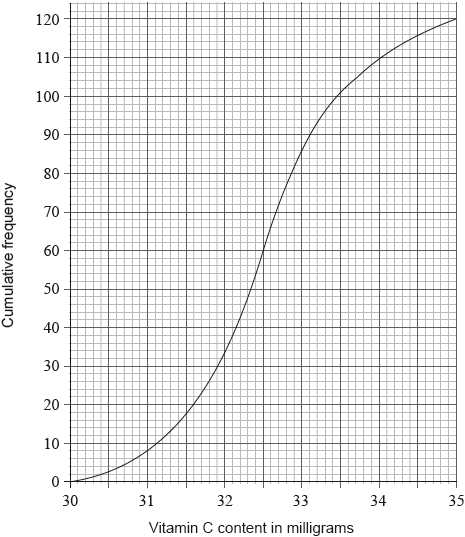

Draw a box-and-whisker diagram on the grid below to represent the Vitamin C content, in milligrams, for this sample.

A sample of 120 oranges was tested for Vitamin C content. The cumulative frequency curve below represents the Vitamin C content, in milligrams, of these oranges.

The minimum level of Vitamin C content of an orange in the sample was 30.1 milligrams. The maximum level of Vitamin C content of an orange in the sample was 35.0 milligrams.
Giving your answer to one decimal place, write down the value of
(i) the median level of Vitamin C content of the oranges in the sample;
(ii) the lower quartile;
(iii) the upper quartile.
Draw a box-and-whisker diagram on the grid below to represent the Vitamin C content, in milligrams, for this sample.